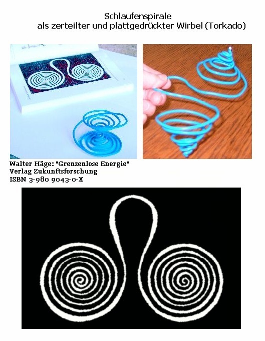
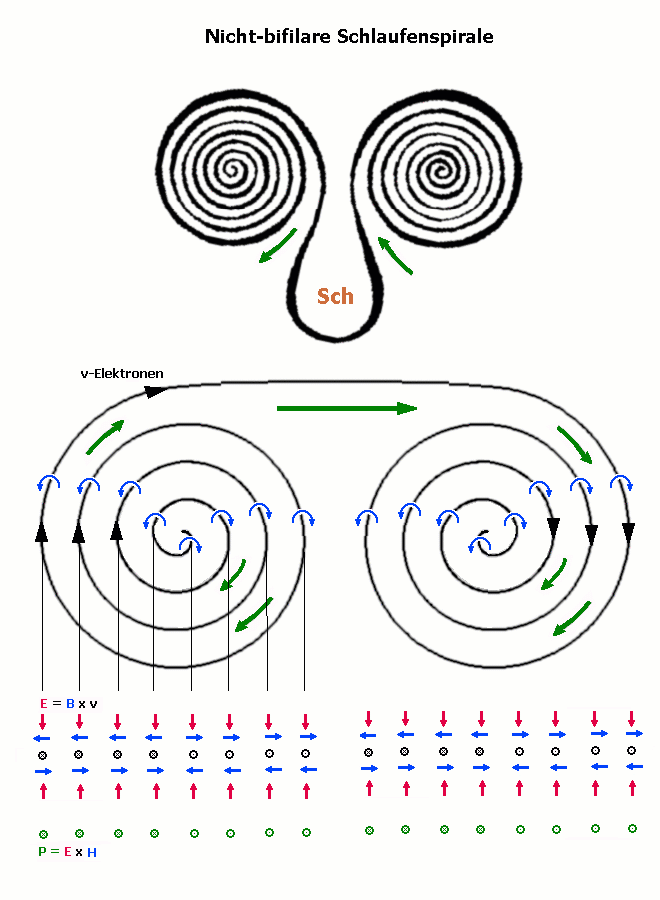

Schlaufenspirale

Als
Empfangsantenne: Die flache Form der Spirale bringt den Effekt, die wechselwirkungsarmen
(räumlichen) Skalarwellenwirbel zu "brechen". Beim senkrechten
Durchgang wird in der Spule Spannung induziert, die dem Wirbel Energie und Information
entzieht. Je flacher sie ist, desto wirksamer.
Ein physikalisch unverständlicher
Effekt: Sie arbeitet auch als gemaltes oder gedrucktes Bild, zum Beispiel weiß
auf schwarz, ohne Metallfarbe.
Erklärung mit hierarchischem Äther-Modell
(Häther): Es gibt auch einen Anteil elektromagnetischer Wirbel, die nicht
der ersten feinstofflichen Hierarchie entstammen (E-Feld, H-Feld), sondern eine
(oder mehrere?) Ebenen feiner sind. Das gleiche Wort "elektromagnetisch"
ist eigentlich unpassend. Diese induzieren ihre Spannung/ihren Strom (feinstofflichere
Ladungen; derzeit nicht detektierbar, aber genauso stark oder stärker) nicht
nur in Metallen, sondern in jeder Materie. Entscheidend ist die Form (leiterbahnähnlich),
ob es Induktion gibt. In diesem Fall ist es der Kontrast in der Druckerfarbe.
Die Farbe ist extrem dünn, also sehr wirksam. Zusätzlich werden natürlich
auch die Metalle als Leiterbahnen benutzt. Dort können feinstoffliche Ladungen
auch kondensieren zu normalen Ladungen. Der Unterschied der Ursachen ist dann
verwischt.

Auf der Oberseite zeigt das
B-Feld radial nach außen, auf der Unterseite radial nach innen. Das elektrische
Feld E ist in die Flachspulenebene hineingerichtet, sowohl unten als auch oben.
Die Spule erscheint also wie eine plattgedrückte negativ-elektrische Ladung.
Insgesamt Nullsumme für B untereinander und E untereinander, aber hier ist
eine Wirbelbildung für wesentlich größere Wirbel (als bei der
bilinearen Flachspule) denkbar. Das E-Feld zeigt hier in die longitudinale Ausrichtung
(bei der bifilaren Flachspule war es B). Die Nullsumme ist also wieder nur ein
mathematisches Artefakt, wenn man den geometrischen Zusammenhang außer Acht
lässt.
Der
Energiefluss P folgt der Richtung des Stromflusses. Durch die Schlaufe "Sch"
wird er nach außen gedrückt. Sonst bleibt alles geschlossen, die Energien
unsichtbar und nahezu undetektierbar. Auch hier liegt ein potentieller Sensor
für Skalarwellen vor.
Wenn
man die beiden Mittelpunkte wieder verbindet und das Ganze ins Räumliche
zurückbiegt, könnte ein völlig in sich selbst abgeschlossener Wirbel
entstehen, der ohne jede Wechselwirkung stabil vor sich hin schwingt. Solche Wirbel
existieren im informierten Wasser. Durch Schütteln (kinetischer Energieintrag)
vervielfachen sie sich, ohne Information zu verlieren, wie beim Kopieren einer
Datei auf der Festplatte.
Stellt
man einen elektrisch-magnetisch schwingenden Gegenstand auf die Schlaufe, dann
übernimmt die Spirale die Schwingung, indem induzierter Strom hin- und herfließt.
Je gleicher beide Spiralenseiten gebaut sind, desto leichter ist der Schwingfall
erreichbar. Schließlich entsorgt sich die Schwingungsenergie schrittweise
über den Poitingfluss P in waagerecht- linearisierter Form (horizontal polarisiert),
die es wesentlich schwerer hat, wieder stabile Wirbelform anzunehmen. Die Schlaufenspirale
wird auf diese Weise benutzt, um Lebensmittel und Getränke zu entstören.
Sie muss dabei waagerecht liegen. Dies ist ein Hinweis darauf, dass die E-Smog-Wirbel
ihre Achse senkrecht zur Erdoberfläche ausrichten, um aus dem Gravitationsfeld
ihre Stabilität zu beziehen, wie nicht anders für Torkados zu erwarten.
In
ähnlicher Form, etwas enger gewickelt, baut man weitere Teslaspulen, siehe
Experimentierset von Prof. K. Meyl. Statt der Schlaufe wird der Draht von beiden
Seiten geerdet. Das Schwingungs-Input erfolgt über eine die Flachspule umgebende
zusätzliche Drahtschleife in gleicher Ebene, wie vom Trafo bekannt. Aus jeder
Spiralenmitte führt ein Draht in die Kugelantenne. Ein gerichteter Funkkontakt
ist nur bei exakt identischen Spulen möglich (Resonanz).
Haben
die beiden Flachspulen verschiedenes Aussehen, etwa auf einer Seite weniger Windungen
und eine andere Krümmung, kann man bestimmte Wirbel filtern und sowohl Frequenzband
als auch Drehrichtung umformen. Dies ist alles den normalen Transformatoren sehr
ähnlich, aber weitgehend unbekannt.
zurück
zu Spiralspulen